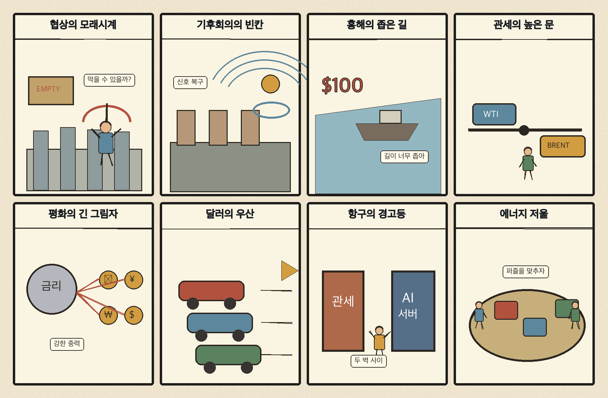
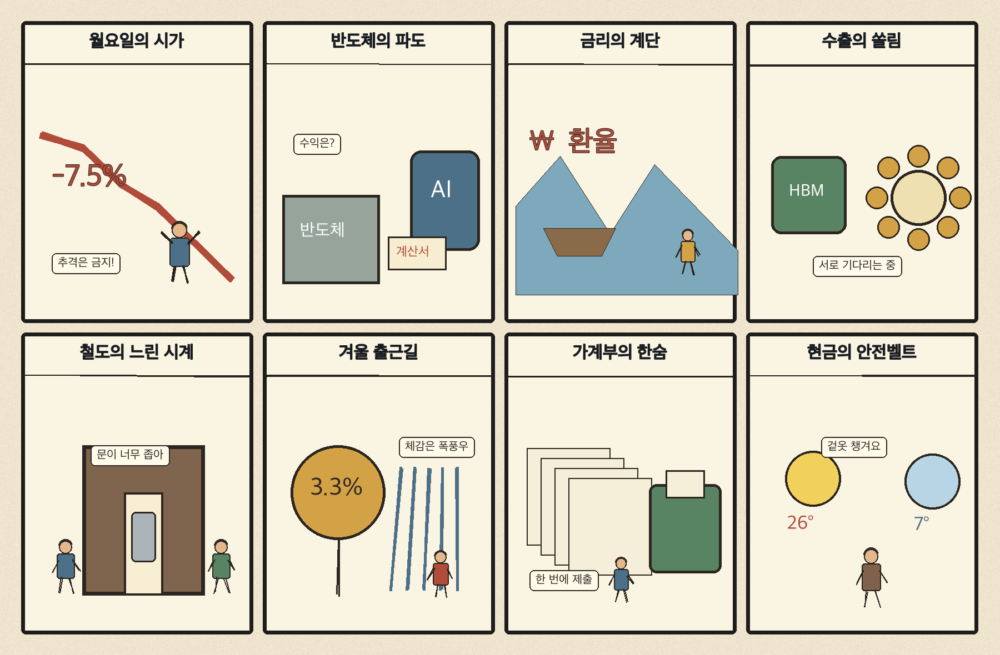

01
엔비디아 · 143.52→125.53달러 · -12.53%
내용요약 시가 대비 -12.57%로 조사군 최하위였습니다.
예상여파 AI 반도체 전반의 위험 프리미엄을 높였습니다.
MORNING_BRIEFING_20261123
작성 시각: 2026-11-23 06:35 KST · 직전 미국 정규장과 2026-11-23 KST 당일 공개 기사 기준
직전 미국 정규장인 11월 20일 뉴욕증시는 다우 -1.93%, S&P 500 -3.70%, 나스닥 -5.28%로 급락했습니다. 엔비디아는 시가 대비 -12.57%, 브로드컴 -11.09%, 마이크론 -10.68%를 기록했습니다. 오늘 한국장은 주말 동안 누적된 AI 반도체·미중 규제 불안을 반영할 수 있어 낙폭과대 반등을 추격하기보다 시가 갭과 외국인 현·선물 수급의 안정 여부를 먼저 확인해야 합니다.
| 지수 | 종가 | 등락률 | 한국 증시 시사점 |
|---|---|---|---|
| 다우존스 | 48,147.33 | -1.93% | 경기·금융 심리 위축 |
| S&P 500 | 6,910.39 | -3.70% | 위험회피 확대 |
| 나스닥 종합 | 22,617.73 | -5.28% | 기술주 변동성 경계 |
AI·반도체 중심의 위험회피가 오늘 한국장에 부담입니다.
직전 거래일 4,869.96으로 마감해 변동성 관리가 우선입니다.
실적보다 투자 회수기간과 규제 준수 여부가 중요해졌습니다.
갭과 외국인 현·선물 수급을 확인한 뒤 대응합니다.
11월 22일 보고서는 일요일 휴장과 급격한 위험회피 속에서 점수·확률·손익비 문턱을 모두 검증한 후보가 없어 공식 추천을 내지 않았습니다. 사후 종목을 추가하지 않습니다.
| 시장 | 종가 | 등락률 | 기준 |
|---|---|---|---|
| KOSPI | 4,869.96 | -5.21% | 11월 20일 · 시가 대비 -1.19% |
| KOSDAQ | 645.68 | -5.71% | 11월 20일 · 시가 대비 -2.31% |
| 다우존스 | 48,147.33 | -1.93% | 미국 11월 20일 정규장 |
| S&P 500 | 6,910.39 | -3.70% | 미국 11월 20일 정규장 |
| 나스닥 종합 | 22,617.73 | -5.28% | 미국 11월 20일 정규장 |
셰브론 +0.93%, 엑슨모빌 +0.73%로 방어했습니다.
국내 급락장에서도 로봇주가 상대강세를 보였으나 과열을 경계합니다.
엔비디아 -12.57%, 브로드컴 -11.09%, 마이크론 -10.68%였습니다.
마이크로스트래티지 -10.01%, 로켓랩 -8.70%로 밀렸습니다.
내용요약 시가 대비 -12.57%로 조사군 최하위였습니다.
예상여파 AI 반도체 전반의 위험 프리미엄을 높였습니다.
내용요약 시가 대비 -11.09%로 급락했습니다.
예상여파 AI 네트워크 투자 기대의 재평가가 국내 공급망 심리에도 부담입니다.
내용요약 시가 대비 -10.68% 하락했습니다.
예상여파 메모리와 HBM 관련주의 동반 약세 가능성을 높입니다.
내용요약 시가 대비 -10.40%로 밀렸습니다.
예상여파 고밸류 반도체 설계주까지 매도가 확산됐습니다.
내용요약 시가 대비 +0.93%로 조사군 최상위였습니다.
예상여파 급락장에서 에너지 대형주의 방어력이 부각됐습니다.
오늘 한국장은 나스닥 -5.28%와 엔비디아·마이크론의 두 자릿수 급락을 주말 뒤 한꺼번에 반영할 수 있습니다. KOSPI가 직전 거래일 -5.21% 하락한 만큼 단순 낙폭과대 반등을 추격하지 말고 원달러 환율, 외국인 현·선물 수급, 4,800선 방어와 장중 변동성 축소를 확인해야 합니다.
오늘은 추천 없음 — 현금 관망
장전 시점에는 미국 나스닥 -5.28%, AI 반도체 두 자릿수 급락, 직전 KOSPI -5.21%가 겹친 상태입니다. 오늘 당일 시가와 실시간 수급을 아직 확인할 수 없고 30건 이상 유사 조건 보정 표본도 부족해 종합점수 75점·상승확률 60%·예상 손익비 1.5를 모두 검증한 후보가 없습니다.
관심 연결종목 에너지·방어주와 낙폭과대 반도체는 관찰 대상일 뿐 매수 추천이 아닙니다. 갭하락 뒤 기술적 반등도 추격매수를 금지합니다.
반도체 대형주의 갭과 변동성 축소 여부를 봅니다.
KOSPI 현물·선물 동시 매수 전환을 확인합니다.
긴축 전망이 원화·은행·부동산에 미칠 영향을 살핍니다.
해상운임과 국제유가 위험 프리미엄을 점검합니다.
핵심 요약: AI 투자 수익성과 엔비디아의 규제 준수 문제가 기술주 평가의 중심으로 떠올랐습니다. 동시에 공공행정과 스타트업 육성 현장에서는 AI의 실제 적용 범위가 넓어지고 있어 투자 회수와 안전한 도입을 함께 점검해야 합니다.
내용요약 대형 기술기업의 실적이 양호해도 대규모 AI 투자가 실제 수익으로 이어지는 속도에 대한 의구심이 주가를 누르고 있다는 분석입니다.
예상여파 AI 인프라 기업은 매출 성장뿐 아니라 감가상각·전력비와 투자 회수기간을 입증해야 높은 밸류에이션을 유지할 수 있습니다.
내용요약 엔비디아 관련 규제 논란이 미중 간 첨단칩 무역 갈등을 다시 자극할 수 있다는 보도입니다.
예상여파 수출통제 강화 가능성은 AI칩 매출과 아시아 반도체 공급망의 실적 가시성을 낮출 수 있습니다.
내용요약 미국 재무장관이 엔비디아의 규정 준수 여부는 최고경영자의 개인사와 별개로 판단해야 한다고 밝혔습니다.
예상여파 기업 지배구조와 수출 규정 준수 문제가 장기화하면 대표 AI 반도체주 전반의 위험 프리미엄이 높아질 수 있습니다.
내용요약 한국 세무서 전화 상담의 절반 이상을 AI가 처리하며 OECD가 공공서비스 활용 사례로 소개했습니다.
예상여파 반복 민원 자동화는 행정 효율을 높이지만 오답 검증과 취약계층 접근성, 개인정보 보호가 함께 요구됩니다.
내용요약 정부가 22개 AI·기술 기업을 육성하는 지원 체계를 가동하고 있다는 산업 현장 보도입니다.
예상여파 국내 AI 스타트업의 자금·판로 확대에 도움이 될 수 있으나 지원 이후 매출과 기술 자립 성과를 확인해야 합니다.
핵심 요약: 유엔기후총회 합의 실패와 차기 사무총장 선출 지연이 다자협력의 약화를 보여줍니다. 이란·우크라이나 관련 군사 긴장과 스페인 정치 변화는 에너지·물류·유럽 자산의 위험 프리미엄을 높일 수 있습니다.
내용요약 화석연료 감축 문구를 둘러싼 대립으로 유엔기후총회가 17년 만에 합의문 채택에 실패했습니다.
예상여파 글로벌 탄소규제와 에너지 전환 투자 일정이 흔들리며 국가별 정책 격차와 기업의 대응 비용이 커질 수 있습니다.
내용요약 트럼프 대통령이 이란과의 합의가 불발되면 새해 공격 가능성을 경고했습니다.
예상여파 중동 긴장이 높아지면 국제유가·해운·방산 자산의 변동성이 확대될 수 있습니다.
내용요약 리비아 항구에 정박한 러시아 군함이 우크라이나 드론 공격을 받은 것으로 추정된다는 보도입니다.
예상여파 전쟁 위험이 지중해 항만까지 번지면 군사·물류 경로의 불확실성과 보험 비용이 높아질 수 있습니다.
내용요약 스페인 총선에서 극우 세력의 정권 참여 가능성이 반세기 만에 부각됐습니다.
예상여파 유럽 내 이민·재정·대외정책의 균열이 커지며 유로존 정치 위험이 재평가될 수 있습니다.
내용요약 차기 유엔 사무총장 선출 절차가 지연되며 지도부 공백 우려가 커지고 있습니다.
예상여파 분쟁·기후·개발 의제의 조정력이 약화되면 다자외교의 실행 속도가 더 늦어질 수 있습니다.

핵심 요약: 자영업 수익성 악화와 중소기업 연체 위험이 내수의 취약성을 드러냈습니다. 임금 격차와 보유세 양극화는 가계 부담을 키우는 반면 K-푸드 수출 확대는 산업 다변화의 기회입니다.
내용요약 매출 1억원을 올리고도 순이익이 300만원에 그치는 자영업 사례를 통해 비용 부담과 낮은 수익성이 조명됐습니다.
예상여파 소비 둔화와 임대료·인건비 부담이 이어지면 폐업과 연체 위험이 커져 내수 회복을 제약할 수 있습니다.
내용요약 5대 은행이 올해 5조8천억원 규모 부실채권을 정리했고 중소기업 연체율은 대기업의 세 배 수준으로 나타났습니다.
예상여파 은행 건전성 관리가 강화되면 취약 중소기업의 대출 문턱과 조달비용이 높아질 수 있습니다.
내용요약 한국의 남녀 임금 격차가 28%로 OECD 회원국 가운데 가장 큰 수준이라는 분석입니다.
예상여파 노동시장 이중구조와 경력단절 개선 압력이 커지며 기업의 인사·보상 체계 점검이 요구됩니다.
내용요약 내년 공시가격 현실화율은 동결되지만 지역별 집값 차이로 보유세 상승 폭이 크게 갈릴 전망입니다.
예상여파 고가 주택 보유자의 세 부담과 지역별 거래심리가 달라져 연말 부동산 수요의 양극화가 심해질 수 있습니다.
내용요약 통상 당국이 굴·딸기 수출 현장을 찾아 K-푸드의 해외 판로와 경쟁력 강화 방안을 논의했습니다.
예상여파 농수산식품 수출 다변화는 반도체 편중을 낮추는 데 보탬이 되지만 물류비와 품질 기준 대응이 중요합니다.
